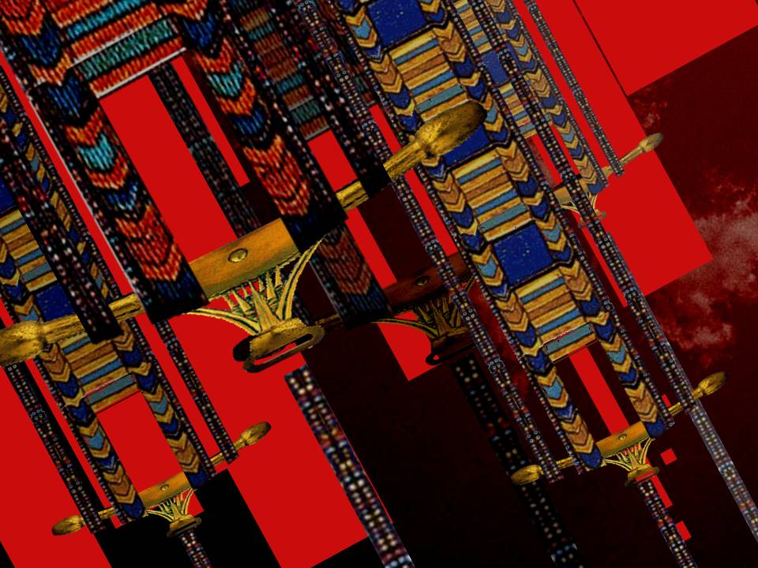
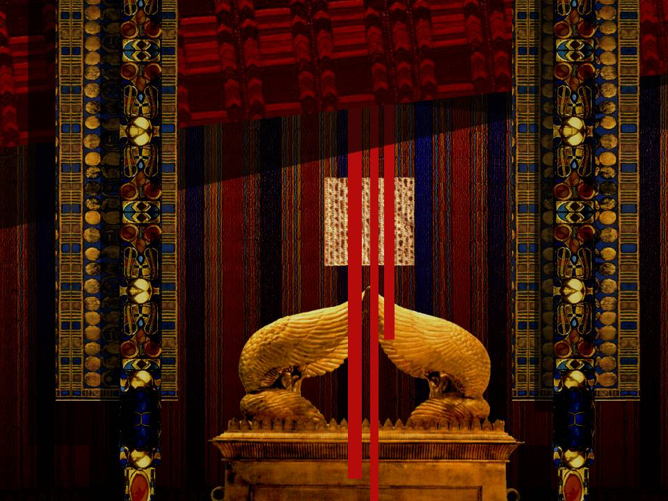

ОТПУСТИ МОЙ НАРОД! Праздник Песах. Исход
Я хочу представить вам видео комикс Пасхальной Агады, ряд сменяющих друг друга картинок: 1. Стон. 2. Призыв Господа, слово, вышедшее из Его уст. 3. Песня влекущего Свою невесту жениха. 4. Кровь заветов: на косяках дверей еврейских домов еще в Египте, кровь священной жертвы и кровь Мессии, Который есть хлеб пресный, сошедший с Небес.

В музыке израильского композитора Даниэля Круглова показана динамика отношений Бога со Своим народом. Даниэль написал также музыку к обоим моим фильмам «Голос Шофара и «Бецалель –сын Света».
автор: Эфраим Калиш
музыка: Даниэль Круглов
вокализ: Лана Мартынец
молитвенное пение: Эфраим Калиш
шофар: Эфраим Калиш
***
Единственный текст, звучащий в этом ролике – общеизвестная, ставшая шлягером фраза "отпусти мой Народ! Кто не знает знаменитое «Let my people go!» (ОТПУСТИ МОЙ НАРОД!) Луи Армстронга? Но сейчас мы не ведем речь о шлягере и звучит оно на языке оригинала – фраза, возраст которой три с половиной тысячи лет, на том самом языке, котором Всевышний обратился к Моше ок. трех с половиной тысяч лет назад.


Рукой крепкой Всевышний вызывает Себе Израиля из земли Египетской из дома рабства, чтобы народ Его не был рабом никому и ничему, ни греху, ни человеку. ОН призывает Свой народ праздновать Ему и служить Ему в пустыне.

В ролике использованы фотографии разных авторов и разного времени. Впрочем врядли их разделяет более пятидесяти лет. Так фотограф - еврей Роман Вишняк запечатлел в тридцатых – сороковых годах двадцатого века целую «планету», не существующую ныне. Она погибла в огне холокоста.


Перед Второй мировой войной он ездил по Европе в попытке соединить отдельные местечки и общины в целостную картину тогдашнего еврейского мира. В служении своем он был чем-то похож на деятельного Жаботинского, который не уставая разъезжал по европе, умоляя евреев собраться в Эрец Исраэль (тогдашней Палестине). Он ездил и предупреждал о надвигающейся опасности. Некоторых ему удалось убедить и спасти. К сожалению, не многие последовали его призыву.
Мне важно было показать преемственность поколений, евреев из разных стран и времен, составляющих один народ, над которым не властно время.
В этом есть пророческий символ того, что в Эрец Исраль делает сегодня и свершит еще завтра Всевышний.
автор: Эфраим Калиш /TORAART/